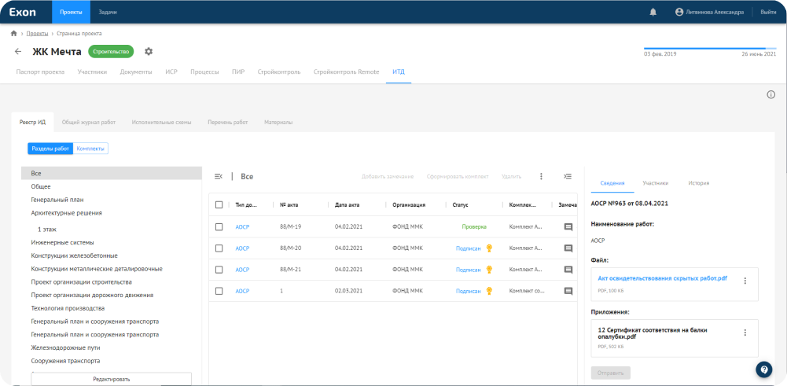

Модуль приема и сдачи исполнительной технической документации

Теперь
вы можете
- Формировать и согласовывать ИТД в электронном виде.
- Использовать готовые формы актов.
- Создавать/редактировать/удалять материалы в сопроводительных документах.
- Группировать акты и комплекты актов.
- Сохранять и согласовывать исполнительные схемы.
- Вести в электронном виде 3-й раздел общего журнала работ с прикреплением документов входа качества.
Модуль
автоматически
- Обеспечивает процесс электронного согласования.
- Передает замечания исполнителю.
- Сохраняет историю согласования.
- Назначает ответственное лицо.
- Отправляет уведомления.
Решения и возможности
- Навигация по разделам
- Согласование отдельных актов или комплектов с ЭЦП
- Сравнение версий чертежей, приложений к актам, исполнительных схем
- Связь журнала входного контроля с общим журналом работ
- Подключение внешнего источника данных с помощью API